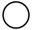
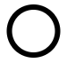
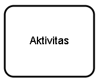
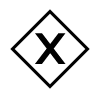
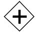
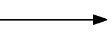
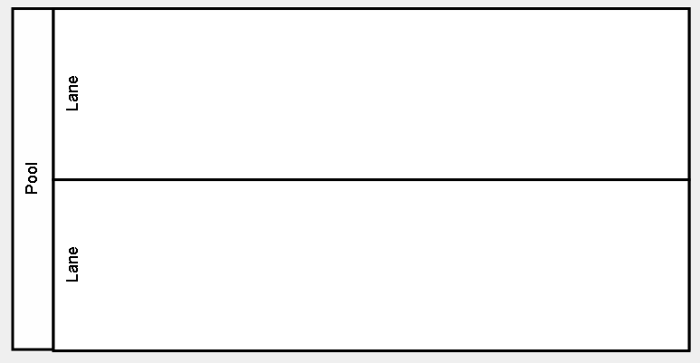
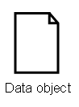
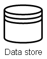

|  |
Start event |
Simbol yang mengindikasikan bahwa sebuah proses akan dimulai. |
|  |
End event |
Simbol yang mengindikasikan bahwa sebuah proses telah berakhir. |
|  |
Task |
Aktivitas atau unit kegiatan yang dilakukan dalam sebuah proses. |
|  |
Exclusive choice |
Simbol yang mengindikasikan suatu pilihan dimana alur proses akan berjalan sesuai salah satu kondisi yang dipilih. Proses akan dilanjutkan setelah aktivitas yang terkait dengan kondisi yang dipilih selesai dilakukan. |
|  |
Parallel |
Merepresentasikan kondisi dimana terdapat dua atau lebih aktivitas yang dapat dilakukan secara paralel/bersamaan. Proses akan dilanjutkan setelah semua aktivitas terkait selesai dilakukan. |
|
Inclusive choice |
Simbol ini mengindikasikan kondisi dimana alur proses akan berjalan berdasarkan satu atau lebih kondisi yang dipilih. Proses akan dilanjutkan setelah aktivitas terkait dengan kondisi yang dipilih selesai dilakukan. |
|  |
Sequence flow |
Digunakan untuk menunjukkan urutan kegiatan yang akan dilakukan dalam sebuah proses. |
|  |
Pool and Lanes |
Pool dan lanes digunakan untuk menggambarkan sebuah organisasi. Setiap lane merepresentasikan sebuah role yang terlibat dalam suatu proses. |
|  |
Data object |
Merepresentasikan informasi atau objek yang dibutuhkan atau dihasilkan dalam alur suatu proses seperti dokumen, email, surat, dan sebagainya. |
|  |
Data store |
Merepresentasikan suatu objek yang digunakan untuk menyimpan atau mengakses data yang terkait dengan sutu proses bisnis, misalnya filing cabinet, database, atau aplikasi. |